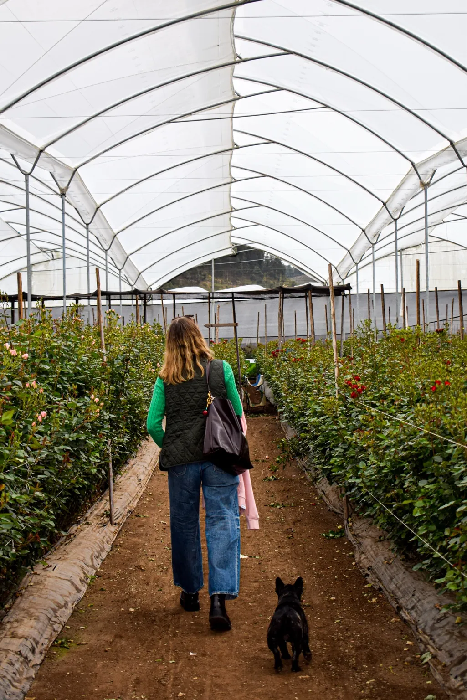

Una mañana entre rosas
Un paseo por el invernadero cambia la manera de mirar un ramo.

Entrar en un invernadero cambia la luz de la mañana. La cubierta suaviza el sol, y al fondo el pasillo de tierra parece estrecharse entre las hileras. A primera vista ves un solo campo verde. Al caminar unos pasos aparecen los colores: un rosa casi blanco, un rojo que se hace más intenso al acercarte y varios botones que todavía guardan sus pétalos.
Vale la pena detenerse en una sola planta. Busca el capullo más pequeño y compáralo con la flor que lleva más tiempo abierta. El primero casi desaparece entre las hojas. La segunda deja ver cómo cada pétalo se curva hacia afuera. Están a pocos centímetros y se ven como dos momentos distintos de la misma historia.
Si haces fotos, prueba con una vista del pasillo antes de buscar tu rosa favorita. La primera guarda la escala del lugar. La segunda guarda el detalle que te hizo detenerte. A veces es una hoja con una gota. A veces es el modo en que un pétalo cambia de color en el borde.
Puedes hacerle espacio a la experiencia entre rosas durante tu estadía en YUA. Al escribir para reservar, pregunta por disponibilidad y horarios. Así podrás escoger un momento del día en el que tengas tiempo de caminar y mirar con calma.